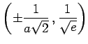
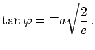

Inhalt Index DeskTop Bronstein

 Funktionen und ihre Darstellung Exponentialfunktionen und logarithmische Funktionen
Funktionen und ihre Darstellung Exponentialfunktionen und logarithmische Funktionen


beschreibt die GAUSSsche Glockenkurve. Sie hat die y-Achse zur Symmetrieachse und nähert sich der x-Achse asymptotisch um so schneller, je größer | a | ist.
Das Maximum A liegt bei (0,1). Die Wendepunkte B und C liegen bei . Die zugehörigen Tangentensteigungen ergeben sich zu 
Eine wichtige Anwendung der GAUSSschen Glockenkurve ist die Beschreibung des Normalverteilungsgesetzes der Beobachtungsfehler:
(Ausführlicher s. Normalverteilung.) Eine weitere Anwendung der GAUSSschen Glockenkurve findet man bei den Wavelets (s. Wavelet-Transformation) im Zusammenhang mit dem Mexikanischem Hut.